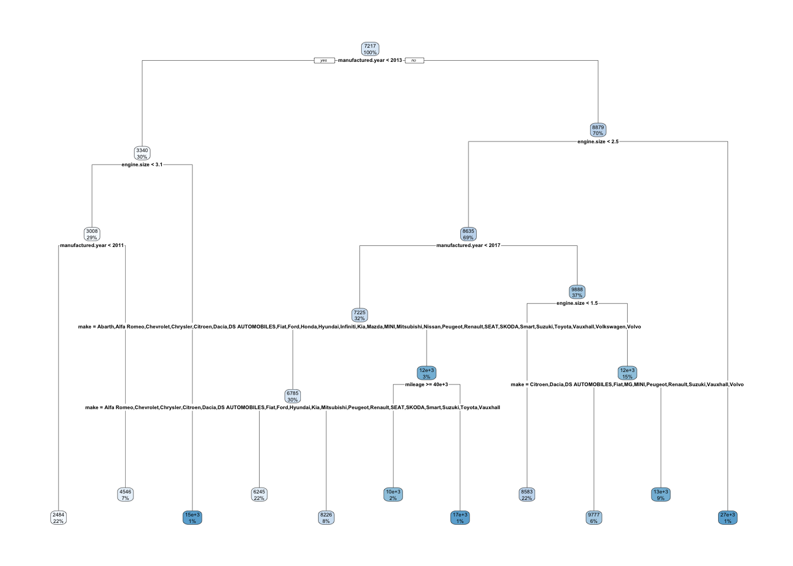
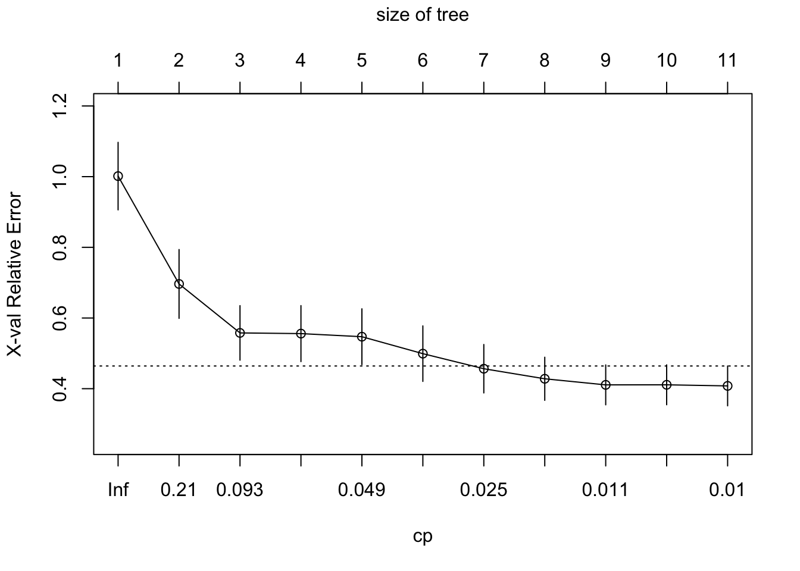
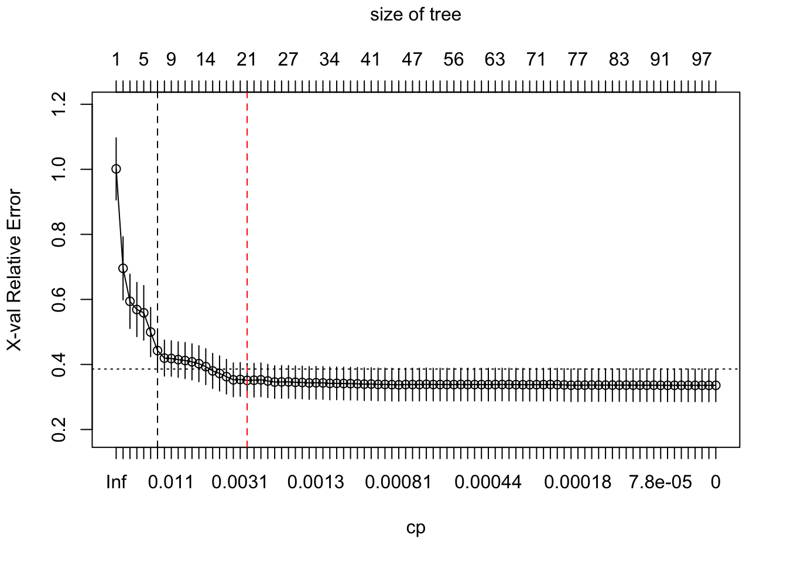
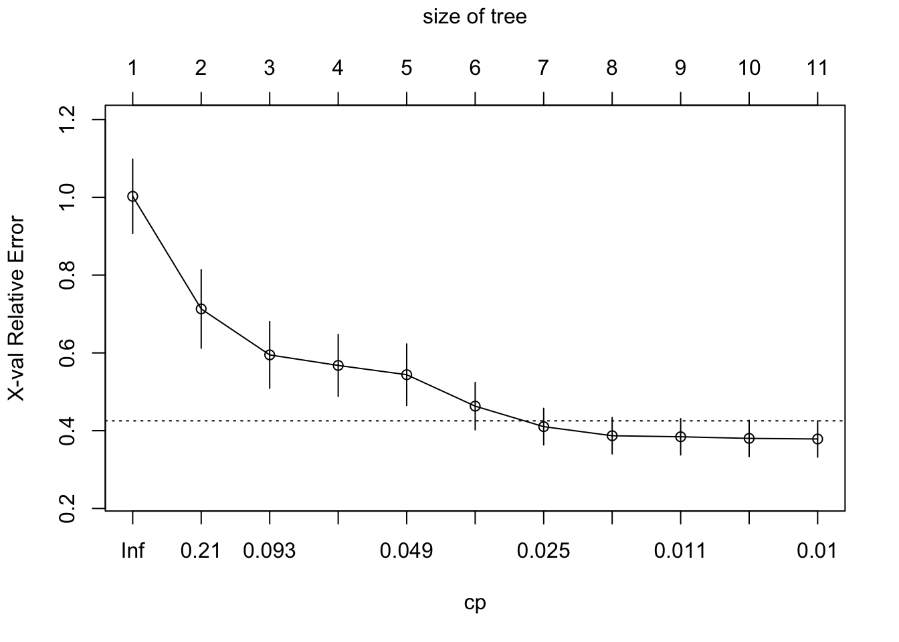
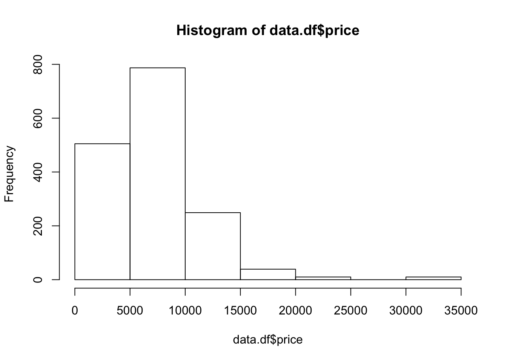
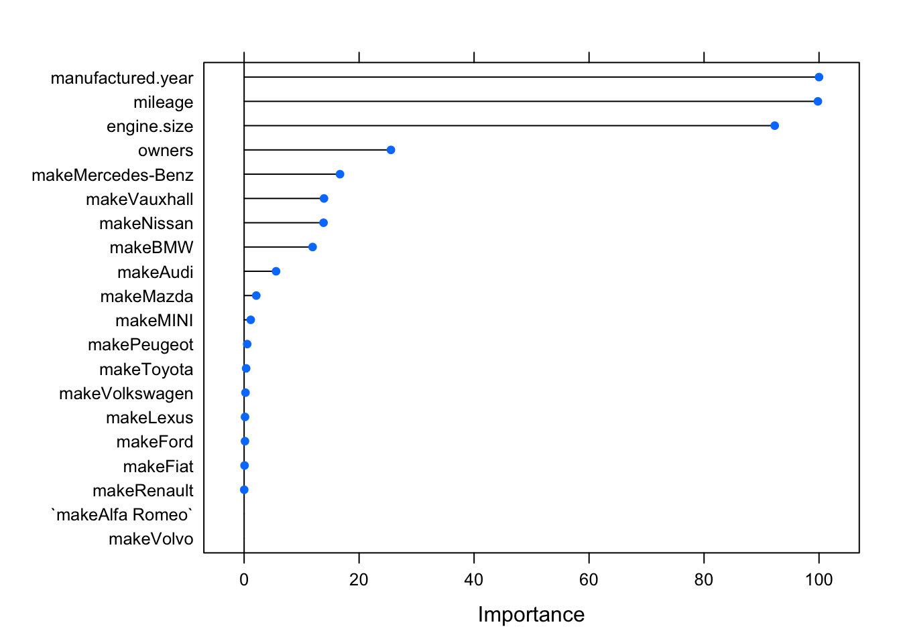
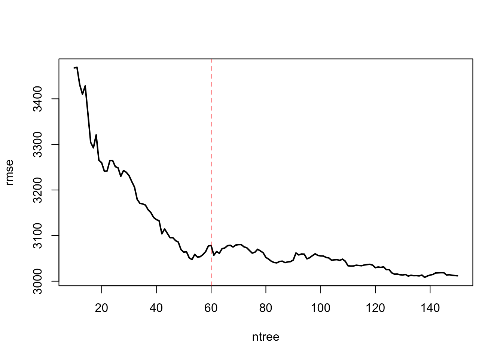
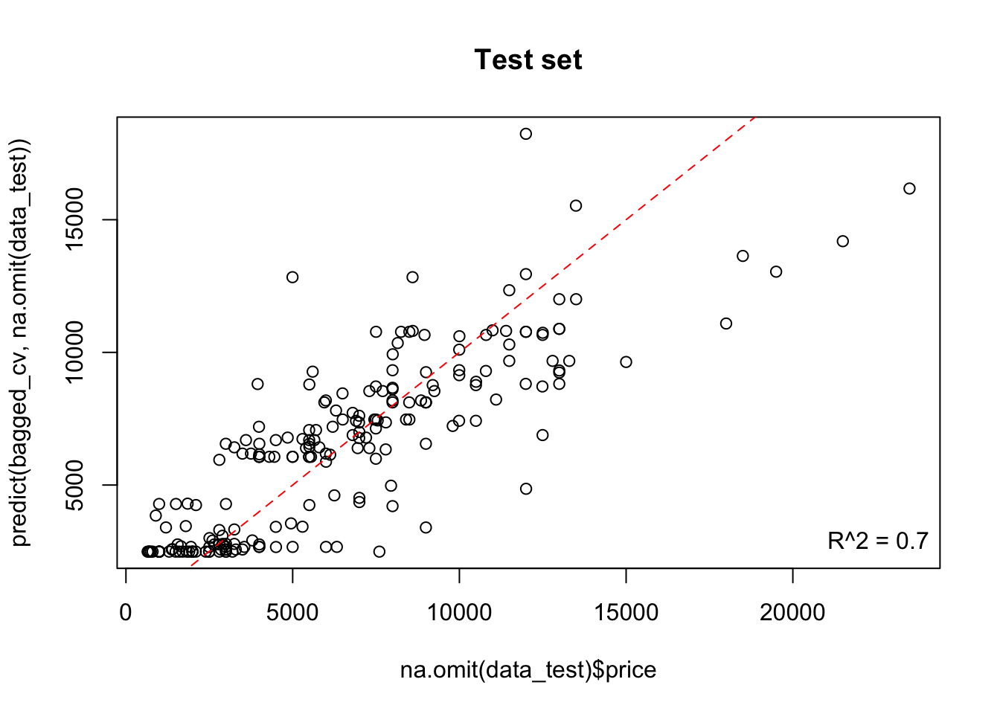

Section 13 Regression trees
13.1 Summary
Also you may see for general R intro example:
13.2 Start section
Sys.time()## [1] "2021-04-16 18:39:16 BST"rm(list=ls())
graphics.off()
gc()## used (Mb) gc trigger (Mb) limit (Mb) max used (Mb)
## Ncells 2326991 124.3 4571884 244.2 NA 4571884 244.2
## Vcells 4263262 32.6 10146329 77.5 16384 8388608 64.0#install.packages("rpart.plot")
#install.packages("AmesHousing")
library(rsample) # data splitting
library(dplyr) # data wrangling
library(rpart) # performing regression trees
library(rpart.plot) # plotting regression trees
library(ipred) # bagging
library(caret) # bagging## Loading required package: latticelibrary(AmesHousing) # data to play with
set.seed(123)13.3 Prepare data
13.3.1 Data
data_file="/Users/alexey/OneDrive/Documents/Home/Alex/stat_in_r_Mar2021/example/structure_data.csv"
data.df <- read.csv(data_file)
data.df <- unique(data.df)
str(data.df)## 'data.frame': 1600 obs. of 6 variables:
## $ mileage : num 32000 69000 95300 85962 64000 ...
## $ manufactured.year: int 2015 2012 2001 2010 2013 2004 2003 2012 2013 2012 ...
## $ engine.size : num 1.6 2 3.2 2.7 1.8 3 5 2.1 1.8 2 ...
## $ owners : int NA 3 6 NA 1 4 3 3 3 2 ...
## $ price : num 7495 7000 8000 7490 7000 ...
## $ make : Factor w/ 43 levels "Abarth","Alfa Romeo",..: 8 4 25 4 4 5 25 25 24 5 ...head(data.df)## mileage manufactured.year engine.size owners price make
## 1 32000 2015 1.6 NA 7495 Citroen
## 2 69000 2012 2.0 3 7000 Audi
## 3 95300 2001 3.2 6 8000 Mercedes-Benz
## 4 85962 2010 2.7 NA 7490 Audi
## 5 64000 2013 1.8 1 7000 Audi
## 6 47053 2004 3.0 4 7995 BMWdim(data.df)## [1] 1600 6rm(data_file)13.3.2 Split
data_split <- initial_split(data.df)
names(data_split)## [1] "data" "in_id" "out_id" "id"data_train <- training(data_split)
data_test <- testing(data_split)13.4 Simple tree model
Uses default pruning settings
m1 <- rpart(
formula = price ~ .,
data = data_train,
method = "anova"
)
m1## n= 1200
##
## node), split, n, deviance, yval
## * denotes terminal node
##
## 1) root 1200 25233610000 7217.132
## 2) manufactured.year< 2012.5 360 4569798000 3340.072
## 4) engine.size< 3.1 350 1440377000 3008.423
## 8) manufactured.year< 2010.5 261 719566900 2484.115 *
## 9) manufactured.year>=2010.5 89 438652500 4546.000 *
## 5) engine.size>=3.1 10 1743531000 14947.800 *
## 3) manufactured.year>=2012.5 840 12933280000 8878.729
## 6) engine.size< 2.45 829 8580714000 8635.245
## 12) manufactured.year< 2016.5 390 3016570000 7224.836
## 24) make=Abarth,Alfa Romeo,Chevrolet,Chrysler,Citroen,Dacia,DS AUTOMOBILES,Fiat,Ford,Honda,Hyundai,Infiniti,Kia,Mazda,MINI,Mitsubishi,Nissan,Peugeot,Renault,SEAT,SKODA,Smart,Suzuki,Toyota,Vauxhall,Volkswagen,Volvo 356 1369669000 6784.680
## 48) make=Alfa Romeo,Chevrolet,Chrysler,Citroen,Dacia,DS AUTOMOBILES,Fiat,Ford,Hyundai,Kia,Mitsubishi,Peugeot,Renault,SEAT,SKODA,Smart,Suzuki,Toyota,Vauxhall 259 631373900 6244.714 *
## 49) make=Abarth,Honda,Infiniti,Mazda,MINI,Nissan,Volkswagen,Volvo 97 461148500 8226.443 *
## 25) make=Audi,BMW,Jaguar,Lexus,Mercedes-Benz,Porsche 34 855767900 11833.530
## 50) mileage>=40446.5 27 193347700 10402.590 *
## 51) mileage< 40446.5 7 393894700 17352.860 *
## 13) manufactured.year>=2016.5 439 4099121000 9888.228
## 26) engine.size< 1.45 262 1154730000 8583.332 *
## 27) engine.size>=1.45 177 1837909000 11819.770
## 54) make=Citroen,Dacia,DS AUTOMOBILES,Fiat,MG,MINI,Peugeot,Renault,Suzuki,Vauxhall,Volvo 71 307640100 9776.577 *
## 55) make=Audi,BMW,Ford,Honda,Hyundai,Infiniti,Jeep,Kia,Lexus,Mazda,Mercedes-Benz,Nissan,SEAT,Toyota,Volkswagen 106 1035339000 13188.320 *
## 7) engine.size>=2.45 11 599548200 27228.550 *rpart.plot(m1)
plotcp(m1)
13.5 Full tree without pruning
m2 <- rpart(
formula = price ~ .,
data = data_train,
method = "anova",
control = list(cp = 0, xval = 10)
)
plotcp(m2)
abline(v = 7, lty = "dashed")
abline(v = 20, lty = "dashed", col="red")
13.6 A model with manual settings control
m3 <- rpart(
formula = price ~ .,
data = data_train,
method = "anova",
control = list(minsplit = 10, maxdepth = 12, xval = 10)
)
m3$cptable## CP nsplit rel error xerror xstd
## 1 0.30635851 0 1.0000000 1.0026040 0.09546510
## 2 0.14873099 1 0.6936415 0.7131700 0.10101577
## 3 0.05805843 2 0.5449105 0.5948951 0.08586096
## 4 0.05492239 3 0.4868521 0.5677906 0.07959552
## 5 0.04384951 4 0.4319297 0.5439939 0.07924383
## 6 0.03135232 5 0.3880802 0.4631415 0.06097607
## 7 0.01961391 6 0.3567278 0.4104493 0.04707860
## 8 0.01118181 7 0.3371139 0.3870748 0.04676690
## 9 0.01098324 8 0.3259321 0.3843668 0.04663158
## 10 0.01064158 9 0.3149489 0.3802017 0.04662678
## 11 0.01000000 10 0.3043073 0.3786965 0.04662779plotcp(m3)
13.7 Selecting optimal hyperparameters through enumeration
13.7.1 Make the hyperparameters grid
hyper_grid <- expand.grid(
minsplit = seq(5, 20, 1),
maxdepth = seq(8, 15, 1)
)
head(hyper_grid)## minsplit maxdepth
## 1 5 8
## 2 6 8
## 3 7 8
## 4 8 8
## 5 9 8
## 6 10 8tail(hyper_grid)## minsplit maxdepth
## 123 15 15
## 124 16 15
## 125 17 15
## 126 18 15
## 127 19 15
## 128 20 15dim(hyper_grid)## [1] 128 213.7.2 # Calculate models for all combinations in the hyperparameters grid
models <- list()
for (i in 1:nrow(hyper_grid)) {
# get minsplit, maxdepth values at row i
minsplit <- hyper_grid$minsplit[i]
maxdepth <- hyper_grid$maxdepth[i]
# train a model and store in the list
models[[i]] <- rpart(
formula = price ~ .,
data = data_train,
method = "anova",
control = list(minsplit = minsplit, maxdepth = maxdepth)
)
}13.7.3 Select hyperparameters with lowest x-validation error
# function to get optimal cp
get_cp <- function(x) {
min <- which.min(x$cptable[, "xerror"])
cp <- x$cptable[min, "CP"]
}
# function to get minimum error
get_min_error <- function(x) {
min <- which.min(x$cptable[, "xerror"])
xerror <- x$cptable[min, "xerror"]
}
# Add cp and error to hyperparameters grid
hyper_grid %>%
mutate(
cp = purrr::map_dbl(models, get_cp),
error = purrr::map_dbl(models, get_min_error)
) %>%
arrange(error) %>%
top_n(-5, wt = error)## minsplit maxdepth cp error
## 1 12 9 0.01 0.3630854
## 2 6 8 0.01 0.3651868
## 3 9 8 0.01 0.3665252
## 4 9 14 0.01 0.3668898
## 5 16 8 0.01 0.367193413.7.4 The optimal tree
optimal_tree <- rpart(
formula = price ~ .,
data = data_train,
method = "anova",
control = list(minsplit = 12, maxdepth = 9, cp = 0.01)
)
rpart.plot(optimal_tree)13.7.5 Prediction
RMSE is the error estimate = how (on average) the predicted value is different from the actual value in the test set
pred <- predict(optimal_tree, newdata = data_test)
RMSE(pred = pred, obs = data_test$price)## [1] 2524.683hist(data.df$price)
quantile(data.df$price)## 0% 25% 50% 75% 100%
## 250 3999 6850 9200 3499913.8 Bootstrap aggregating (bagging)
13.8.1 bagged trees model with default settings
Note
- Out-Of-Bag x-validation
- RMSE in the model summary
# make bootstrapping reproducible
set.seed(123)
# train bagged model
bagged_m1 <- bagging(
formula = price ~ .,
data = data_train,
coob = TRUE
)
bagged_m1##
## Bagging regression trees with 25 bootstrap replications
##
## Call: bagging.data.frame(formula = price ~ ., data = data_train, coob = TRUE)
##
## Out-of-bag estimate of root mean squared error: 3251.25413.8.2 Selecting optimal bag size
# assess 10-50 bagged trees
ntree <- 10:150
# create empty vector to store OOB RMSE values
rmse <- vector(mode = "numeric", length = length(ntree))
x <- Sys.time()
for (i in seq_along(ntree)) {
# reproducibility
set.seed(123)
# perform bagged model
model <- bagging(
formula = price ~ .,
data = data_train,
coob = TRUE,
nbagg = ntree[i])
# get OOB error
rmse[i] <- model$err
}
y <- Sys.time()
y-x## Time difference of 34.79162 secsplot(ntree, rmse, type = 'l', lwd = 2)
abline(v = 60, col = "red", lty = "dashed")13.9 Bagging with caret
https://topepo.github.io/caret
https://topepo.github.io/caret/available-models.html
to be done: requires
# Specify 10-fold cross validation
ctrl <- trainControl(method = "cv", number = 10)
# CV bagged model
x <- Sys.time()
bagged_cv <- train(
price ~ .,
data = na.omit(data_train),
method = "treebag",
trControl = ctrl,
importance = TRUE,
)
y <- Sys.time()
y-x## Time difference of 3.312546 secsbagged_cv## Bagged CART
##
## 561 samples
## 5 predictor
##
## No pre-processing
## Resampling: Cross-Validated (10 fold)
## Summary of sample sizes: 504, 506, 505, 505, 505, 505, ...
## Resampling results:
##
## RMSE Rsquared MAE
## 3044.858 0.658359 1909.488# plot most important variables
plot(varImp(bagged_cv), 20) 
pred <- predict(bagged_cv, data_test)
RMSE(pred, data_test$price)## Warning in pred - obs: longer object length is not a multiple of shorter object
## length## [1] 5330.00513.10 Confusion plots
plot(na.omit(data_train)$price,
predict(bagged_cv, na.omit(data_train)),
main="Training set")
abline(a=0,b=1,col="red",lty=2)
R2 <- cor(na.omit(data_train)$price,
predict(bagged_cv, na.omit(data_train)))^2
legend("bottomright", legend=paste("R^2 =",round(R2,2)), bty="n")
plot(na.omit(data_test)$price,
predict(bagged_cv, na.omit(data_test)),
main="Test set")
abline(a=0,b=1,col="red",lty=2)
R2 <- cor(na.omit(data_test)$price,
predict(bagged_cv, na.omit(data_test)))^2
legend("bottomright", legend=paste("R^2 =",round(R2,2)), bty="n")
13.11 Final section
sessionInfo()## R version 3.6.2 (2019-12-12)
## Platform: x86_64-apple-darwin15.6.0 (64-bit)
## Running under: macOS 10.16
##
## Matrix products: default
## BLAS: /Library/Frameworks/R.framework/Versions/3.6/Resources/lib/libRblas.0.dylib
## LAPACK: /Library/Frameworks/R.framework/Versions/3.6/Resources/lib/libRlapack.dylib
##
## locale:
## [1] en_GB.UTF-8/en_GB.UTF-8/en_GB.UTF-8/C/en_GB.UTF-8/en_GB.UTF-8
##
## attached base packages:
## [1] stats graphics grDevices utils datasets methods base
##
## other attached packages:
## [1] AmesHousing_0.0.4 caret_6.0-86 lattice_0.20-41 ipred_0.9-11
## [5] rpart.plot_3.0.9 rpart_4.1-15 rsample_0.0.9 dplyr_1.0.4
## [9] plotly_4.9.3 ggplot2_3.3.3
##
## loaded via a namespace (and not attached):
## [1] httr_1.4.2 tidyr_1.1.2 jsonlite_1.7.2
## [4] viridisLite_0.3.0 splines_3.6.2 foreach_1.5.1
## [7] prodlim_2019.11.13 assertthat_0.2.1 stats4_3.6.2
## [10] highr_0.8 yaml_2.2.1 globals_0.14.0
## [13] pillar_1.4.7 glue_1.4.2 reticulate_1.18
## [16] pROC_1.17.0.1 digest_0.6.27 colorspace_2.0-0
## [19] recipes_0.1.15 htmltools_0.5.1.1 Matrix_1.3-2
## [22] plyr_1.8.6 timeDate_3043.102 pkgconfig_2.0.3
## [25] listenv_0.8.0 bookdown_0.21 purrr_0.3.4
## [28] scales_1.1.1 gower_0.2.2 lava_1.6.9
## [31] tibble_3.0.6 mgcv_1.8-33 generics_0.1.0
## [34] farver_2.0.3 ellipsis_0.3.1 withr_2.4.1
## [37] furrr_0.2.2 nnet_7.3-15 lazyeval_0.2.2
## [40] cli_2.3.0 survival_3.2-7 magrittr_2.0.1
## [43] crayon_1.4.1 evaluate_0.14 future_1.21.0
## [46] fansi_0.4.2 parallelly_1.23.0 nlme_3.1-152
## [49] MASS_7.3-53.1 class_7.3-18 tools_3.6.2
## [52] data.table_1.13.6 lifecycle_1.0.0 stringr_1.4.0
## [55] munsell_0.5.0 e1071_1.7-4 compiler_3.6.2
## [58] rlang_0.4.10 grid_3.6.2 iterators_1.0.13
## [61] rstudioapi_0.13 htmlwidgets_1.5.3 crosstalk_1.1.1
## [64] labeling_0.4.2 rmarkdown_2.6 ModelMetrics_1.2.2.2
## [67] gtable_0.3.0 codetools_0.2-18 DBI_1.1.1
## [70] reshape2_1.4.4 R6_2.5.0 lubridate_1.7.9.2
## [73] knitr_1.31 utf8_1.1.4 stringi_1.5.3
## [76] parallel_3.6.2 Rcpp_1.0.6 vctrs_0.3.6
## [79] tidyselect_1.1.0 xfun_0.21